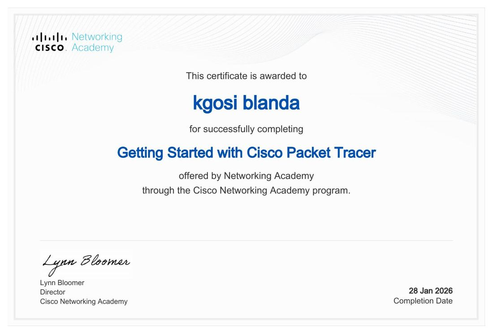
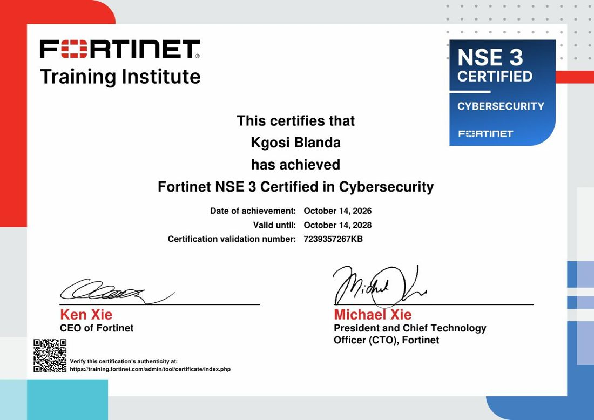
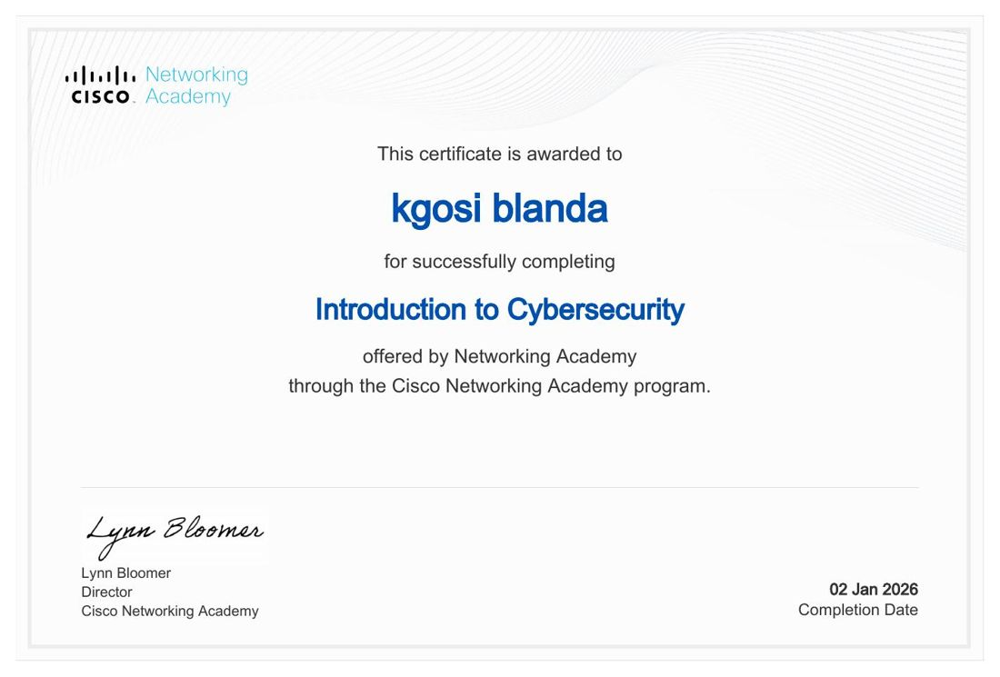
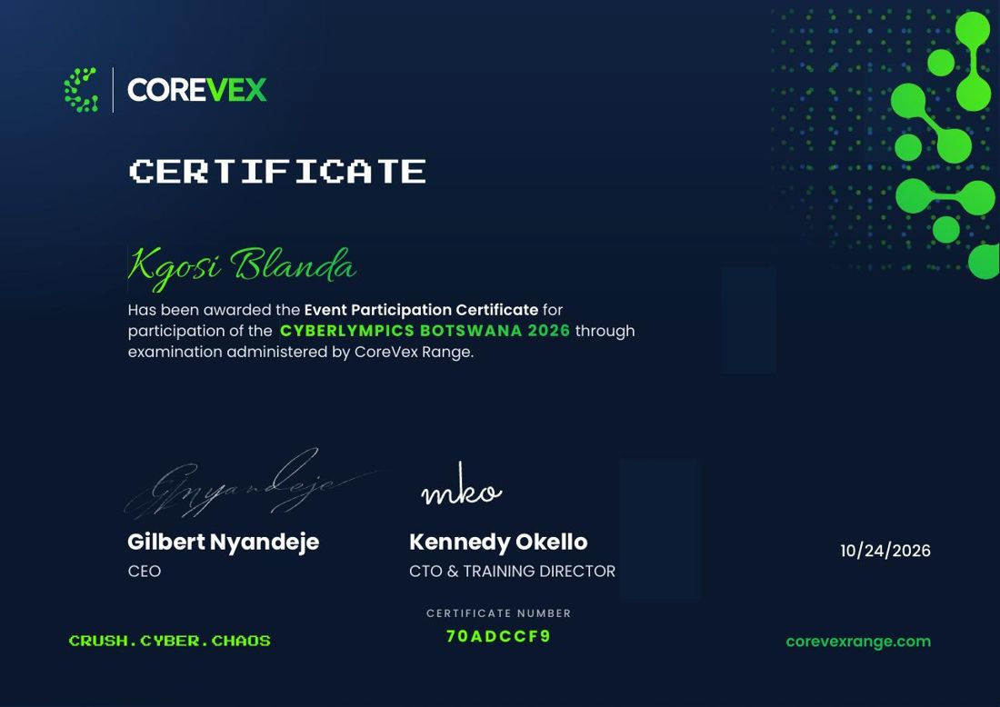
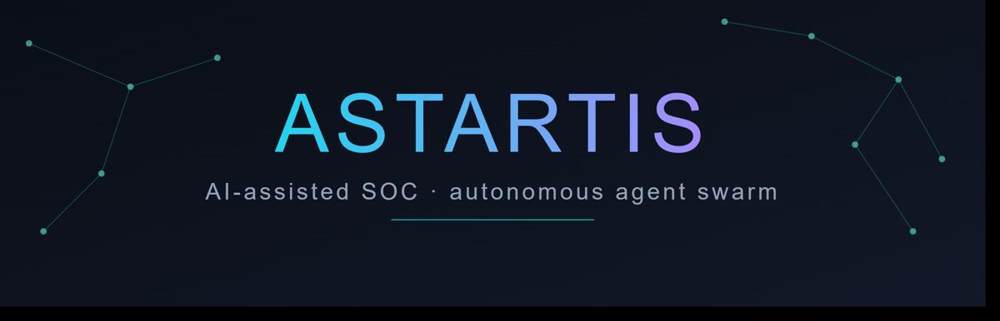
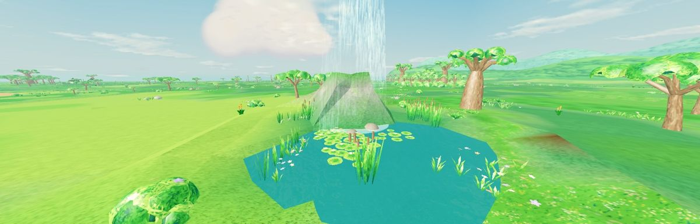

Skills and projects
What I can do, how I can prove it, and what I build in my own time. My full certificates are on the Certificates page.
1. Networking (Cisco and RUCKUS)
What: I've learnt how networks are built, addressed and connected through Cisco Networking Academy, RUCKUS routing and switching training and Cisco Black Belt partner training.
Evidence: Cisco NetAcad Networking Basics, Getting Started with Cisco Packet Tracer, RUCKUS RSP 100, Cisco Black Belt Switching Support Stage 2, and the CCNA I'm studying for now.



Impact: I can plan IP addressing for a small network and build and test simple networks in Cisco Packet Tracer. It also helps me understand the networking equipment I deal with at work.
2. Network security (Fortinet NSE 1-3)
What: Security basics from the Fortinet Training Institute: the threats out there, how attacks work, and how networks are defended, for example with firewalls.
Evidence: Fortinet NSE 1, 2 and 3 Certified in Cybersecurity (October 2026), Cisco NetAcad Introduction to Cybersecurity, and taking part in Cyberlympics Botswana 2026.



Impact: Now when I look at a network I don't only ask whether it works. I also ask how it's protected. That's what my project Astartis is built on.
3. Web development (this site)
What: I made this portfolio with HTML and one shared CSS file, and published it with GitHub Pages.
Evidence: This website and its code on GitHub.
Impact: I learnt how pages link together, how one stylesheet controls the look of the whole site, and how to fix a live site when it breaks. When my first upload got renamed to index (1).html and the site wouldn't load, I worked out what happened and fixed it.
Projects
Astartis

Astartis is a security operations platform for Windows that works offline. It watches network traffic, system events and files, uses a team of AI security agents running on local IBM Granite models, and can take action, like blocking traffic at the firewall or quarantining a file. Everything it does goes into an audit log that can't be secretly changed, and anything that can't be undone needs approval from several people first, so humans stay in control.
I designed it and built it with AI coding assistants, mainly IBM Bob, in C++ with an Elixir/Phoenix dashboard, and entered it in the IBM AI Builders Challenge. Building it taught me how real security systems fit together: detecting, deciding, responding and keeping records. Astartis on GitHub
Packet Plains (in progress)
Packet Plains is a Roblox game I'm making. You play as a field technician fixing up a sunny solarpunk village by parkouring, ziplining and chasing gremlins. Real networking ideas are hidden in the gameplay, like houses being addresses on a network, so players learn without it feeling like a lesson. I'm building it in Roblox Studio with Luau code and Blender for the 3D models, with AI helping with the code, and I'm using it to learn to code myself.


